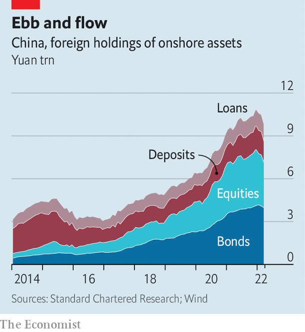
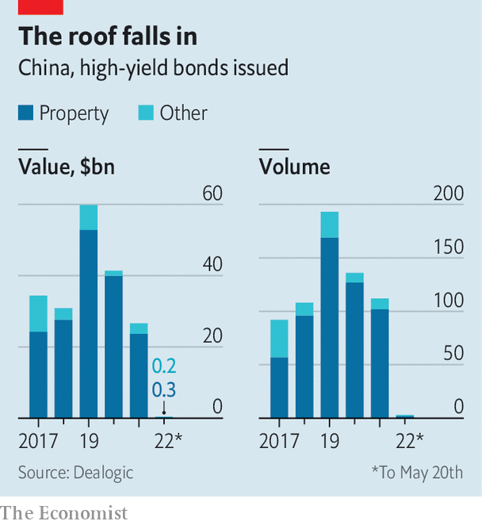

Xi Jinping’s policies are having a profound impact on markets—and a painful one
Jing’an century, a housing development with ponds and lush greenery in north Shanghai, should have been bustling as workers put the finishing touches on flats. Instead the area is silent. A two-month lockdown of the city of 25m people has forced Yanlord, the developer, to halt construction on the site. Homebuyers have been on edge for months as some of the country’s largest developers default on bonds and struggle to deliver homes.
Now Yanlord, until recently deemed in decent shape, is telling customers they will not receive their properties on time. At least 20 housing developments across the city have announced similar delays. Many other projects have been forced to stop selling units. The lockdown has been so severe that roadblocks and police checkpoints have mushroomed. Workers, materials and sales agents have been unable to reach construction sites. Meanwhile, Yanlord’s pre-sales of homes have slumped to less than 20% of the level a year ago.
China’s property crisis is not new. But growing fears among foreign investors of a grand policy disaster are. The combination of a nosediving housing market and Xi Jinping’s uncompromising zero-covid policy is just one recent conundrum that has led foreign fund managers to question whether China is losing its pragmatic approach to managing the economy.
Mr Xi’s insistence on using prolonged lockdowns to rid China of the Omicron variant and his backing for Russia’s war in Ukraine strike many investors as ideological. Add in the timing of his crackdown on tech groups such as Alibaba, an e-commerce company, and on the leverage of property giants such as Evergrande, and it is not hard to see why some of the world’s largest investment groups are questioning the quality of leadership in Beijing. Many attribute this and other campaigns to preparations for this autumn’s Communist Party congress, at which Mr Xi is expected to be granted another five years in office. The events of 2022 could shape how global investors view China for years to come.
In little over a year Mr Xi’s policies have had a profound—and painful—impact on global markets. They have knocked $2trn from Chinese shares listed in Hong Kong and New York. Chinese initial public offerings in these two cities have nearly ground to a halt this year. China’s property firms have sold just $280m in high-yield dollar bonds so far in 2022, down from $15.6bn during the same period last year. Within China, the value of yuan-denominated financial assets held by foreigners fell by more than 1trn yuan ($150bn) in the first quarter of 2022, the biggest drop ever. The Institute of International Finance (iif), a bankers’ group in Washington, forecasts that $300bn in capital will flow out of the country this year, up from $129bn in 2021.
Onshore markets were one of the linchpins of China’s relations with the outside world. The belief that they would continue to open up helped to maintain links with Western financiers hoping to strike it rich. Even as relations between America and China soured during the Trump years, a craving for onshore securities took hold of many of the world’s biggest financial groups. As a trade war dampened global sentiment, regulators in Beijing began expediting long-promised reforms, eventually allowing foreign financial groups to wholly own their onshore businesses.
The policies were a clear sign that Beijing meant business. And the West reciprocated. In 2018 msci added Chinese shares to its flagship emerging-markets index. Other index inclusions followed, creating a flood of foreign capital into onshore Chinese securities. Between the start of 2017 and a peak at the end of 2021, foreign financial exposure to yuan-denominated assets more than tripled to 10.8trn yuan.

That elation has fizzled. Many foreign investors simply grew too enthusiastic about China and chose to ignore the risks, says Hugh Young of Aberdeen, an asset manager. But the market is waking up. The view from many investors is that, although China has never been more open to foreign capital, it has also not been this ideologically inflexible in recent memory.
China’s support for Russia has fed concerns over its claim on Taiwan, which it vows eventually to take back by any means necessary. Geopolitical concerns such as this are part of a broad recalibration of the risks associated with China. “Policy risk has increased markedly,” says Neil Shearing of Capital Economics, a research firm. That has led investors to demand a higher risk premium on Chinese assets.
Some leading investment groups are starting to air these views in public. BlackRock, a giant asset manager that has been expanding rapidly in China, said on May 9th that it had shifted its six- to 12-month view of Chinese equities to “neutral” from “modest overweight”. Julius Baer, a private bank, said in April that it was ending a five-year call that Chinese equities would eventually become a “core asset class”.
This shift has contributed to a foreign sell-off of onshore stocks and bonds. The unpopularity of yuan-denominated bonds has also been driven by a weaker currency and higher interest rates in America. The value of foreign-held equities in China fell by nearly 20% in the first three months of the year, or by about 755bn yuan. Much of the drop was due to a fall in stock valuations; the csi 300, a key index, is down by more than 17% since January. But foreign investors are also scaling back their exposure. Total foreign equity holdings have ebbed by about 2% so far this year, calculates Gavekal, a research group. As a share of China’s stockmarket they fell from about 4.3% at the end of 2021 to just below 4% in March. An interest-rate cut by the central bank on May 20th did little to buoy sentiment. Several portfolio managers expect outflows to continue until there is more clarity around economic policy.

The gloomy mood has been painful for China’s small and diminishing cohort of liberal technocrats, who are still promoting the idea of an open China that is at least mildly sensitive to the concerns of global investors. For years regulators have used carefully timed reforms to reward loyal long-term investors. As sentiment soured in April they succeeded in delivering long-awaited private-pension reforms in an attempt to woo asset managers. It was a salve regulators had been holding on to, in the expectation that sentiment would worsen early this year, says one fund manager.
Many investors see 2022 as a bellwether year for the direction of policy. The optimistic outlook is that this gloomy period of ideology, policy missteps and slow growth is part of the preparation for the party congress in the autumn. Once that passes, pragmatists will have more control of policy. Zero-covid will end. Support for the economy and tech firms will return.
This camp includes many of the investment managers who have slogged it out in China for decades. Global banks have been telling investors for 20 years that the Chinese market is a one-way bet. Only a war over Taiwan, or a hot conflict of that nature, could upend that narrative, says one foreign banker in China.
The pessimistic view is that Mr Xi is serious about the direction in which he has taken China over the past two years and that the future will be far more ideological. s&p, a rating agency, warned on May 19th that policy shocks to education, housing, labour and social welfare could continue for years. Global investors have been slow to grasp the significance of China’s policy changes, says Nikolaj Schmidt of T. Rowe Price, an investment manager. It is unlikely things will return to normal soon.
Mr Xi’s zero-covid policy and the unrelenting lockdown of Shanghai have also raised concerns about China’s leadership. Some investors worry that the country has turned its back on growth; that zero-covid could be a sign of a factional struggle in Beijing; or that it will eventually lead to one. “When investors hear they’re getting dragged into politics, that’s when they get nervous,” says Sean Debow of Eurizon Capital Asia, an asset manager.
One probable outcome in the months ahead is a growing divergence between the investors outside China and those with large offices inside the country. Many groups that have worked for decades to open up in China are continuing to hire staff. Investors that have accessed the onshore market through Hong Kong, by contrast, may continue to reduce their exposure. If anything, investing in China will only become more divisive this year. ■
For more expert analysis of the biggest stories in economics, business and markets, sign up to Money Talks, our weekly newsletter.